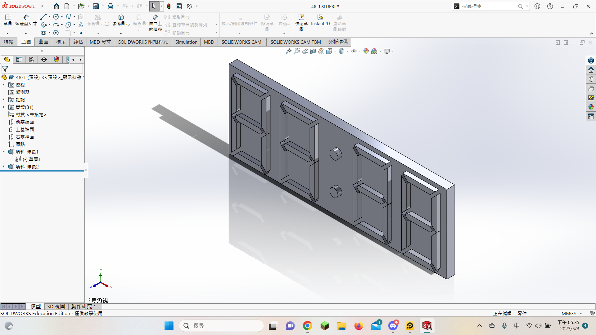
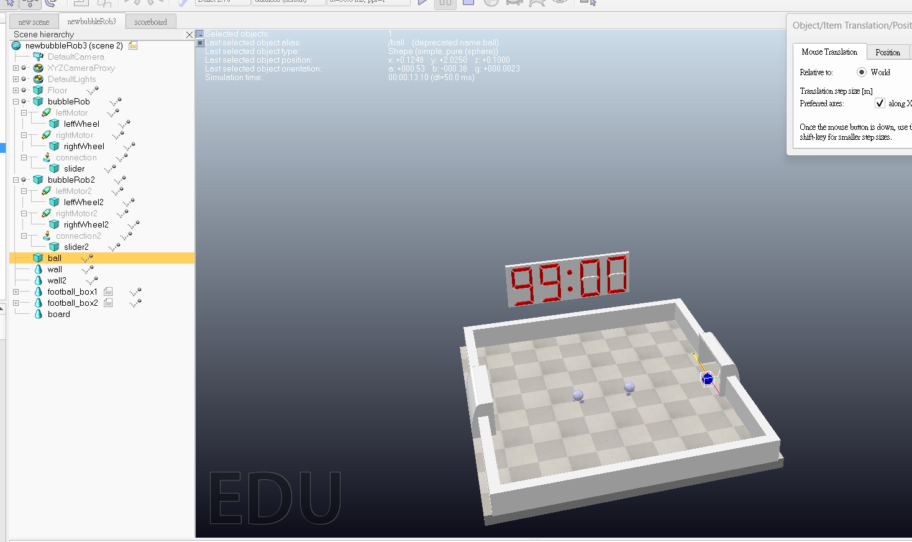

ag2 <<
Previous Next >> Brython
pj2
1.製作實體記分板

記分板檔案
2.記分板程式(scoreboard)

3.用python生成球並開啟Detectable
size = [0.2, 0.2, 0.2]
position = [0, 0, 0.5]
options = 8
ball = sim.createPureShape(1, options, size, 1, None)
sim.setObjectPosition(ball, -1, position)
ball = sim.getObject('/Sphere')
sim.setObjectSpecialProperty(ball, sim.objectspecialproperty_detectable)
4.第一版實體記分板足球遊戲(pj2ag7_zmq_bubbleRob.7z)
1.目前的足球遊戲的球還是採用回到中心的方法
2.球員則改成不會回到原來的地方(如果球員在中心得分會被回到中心的球撞飛)
5.第二版足球遊戲(足球隨機生成)(pj2ag7_zmq_bubbleRob2.7z)
1.將上一坂的球改成進球刪除並隨機生成(場景中原還沒有球，由zmq_bubbleRob程式生成)
2.球員依然有可能被撞飛，如果球剛好隨機到球員的位置
3.球員1(zmq_bubbleRob1)必須要先執行，因為只需要一顆球不用生成兩次，但球不先生成程式取不到東西也就是 sim.getObject('/Sphere')但沒有物件叫做Sphere就會出錯
4.因為我是zmq加coppeliasim lua的寫法，若是像上一版本一樣計分板跟球的程式都用lua寫，就沒有問題，但這個版本我將球的控制用zmq，所以我在刪除球時發現zmq有一點延遲，就是記分板已經得了五六分了球才刪除，所以我在lua中加入
sim.setObjectSpecialProperty(ball, sim.modelproperty_not_detectable)
在得分後將可偵測關掉，然後再刪除重新生成球，這樣就只會得一分，而且可以決定在球框裡再刪除，這樣就會有進球的感覺，不會像之前一樣碰到感測器就消失
6.修改第五點第三項之問題，利以下程式判斷Sphere是否存在，若不存在則exist值為1
try:
Sphere= sim.getObject('/Sphere')
except Exception as e:
print("Failed to get object: ", e)
exist=1
因此可用if迴圈來判定是否生成物件Sphere，如下:
size = [0.2, 0.2, 0.2]
position = [0, 0, 0.5]
options = 8
exist=0
try:
Sphere= sim.getObject('/Sphere')
except Exception as e:
print("Failed to get object: ", e)
exist=1
if exist==1:
ball = sim.createPureShape(1, options, size, 1, None)
sim.setObjectPosition(ball, -1, position)
ball = sim.getObject('/Sphere')
sim.setObjectSpecialProperty(ball, sim.objectspecialproperty_detectable)
7.將第六點的方法加入zmq的程式中(pj2ag7_zmq_bubbleRob3.7z)
1.成功解決5.3所述需要某一的程式先執行的問題，變成誰先執行都可以
2.隨機球會撞飛球員，還未解決
8.新球框草圖
.png)
新球框檔案
套入新場景
9.第四版足球遊戲(新場景)(pj2ag7_zmq_bubbleRob4.7z)
1.導入新場景
2.更改球員顏色
3.調整進球刪除的位置
10.第五版足球遊戲(pj2ag7_zmq_bubbleRob5.7z)
1.解決隨機球會撞飛球員的問題
2.產生新問題，在函式跳出去判斷隨機球位置時，會有一段球被刪除但還沒生成的時間會讓
ball = sim.getObject('/Sphere')這行程式出錯(已解決)
3.發現新問題，在球生成時球員不能再中心，因為生成球跟設定位置式兩個動作，球會先生成在中心，然後再換到設定的位置，雖時間很短但還是會撞飛球員(在其他位置不會被撞飛，跟第一點問題不同)
4.未知問題，有時候進球時某一程式會出錯而停止(概率性出現)出錯的行數也不唯一
11.第六版足球遊戲(pj2ag7_zmq_bubbleRob6.7z)
1.新增裁判程式將兩球員程式中生成球和刪除球的部分整合到裡面
2.第十點第四項的未知問題是因為刪除球和生成球的程式分成兩個，所以在獲取球的物件時會衝突(球被刪除時，另一台的程式找不到球這個物件)
12.第七版足球遊戲(pj2ag7_zmq_bubbleRob7.7z)
1.將場景中球框及記分板註記顏色
2.前面版本的lua程式9到10會顯示錯誤(已修正)
3.記分板的lua程式重複的迴圈簡化成函數
4.若在場景執行中拖動球得分有時會出錯導致場景模擬停止，但利用球員得分則不會(對遊戲本身無影響)
ag2 <<
Previous Next >> Brython